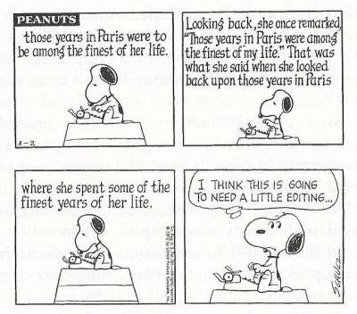

First of all, happy new year! It's crazy how time has just zipped by so quickly; come Monday, I will begin with the immersive portion of my DBC experience! In anticipation of that time, and the very many questions I am bound to ask, this post will cover questions. Specifically, what makes a good question and what approaches work well in order to get the answers you need?
I've asked some questions on sites such as StackOverflow and certain coding subreddits on Reddit, and I've gotten some pretty good answers! Granted, I am sure that I could use a little more experience in that regard, but at least for the time being, a few tricks in particular worked spectacularly well for me.
Research your issue. It is pretty likely that someone has encountered your problem already and has posted about it. Finding the solution yourself, or at least looking at the suggestions and figuring out what works or doesn't work for you will be helpful in assessing the problem, and may help you phrase your question if you can't find the answer yourself.
Provide a good title. The post of your title has to be specific enough to summarize the issue you are having. It needs to be able to appeal to the people with the skills to assist you. That said, imagine that you are someone looking through questions that people have. What kinds of details would help you figure out if you may be knowledgeable enough to answer a problem? A terrible post title would be something too generic like "JavaScript error." However, a good title might be "Document is not defined error for 'document.getElementById()'." If you really can't figure out a good title for your post, start with the body and come back to the title later. The process of thinking through your problem as you try to put it into words is bound to be helpful in generating a title.
Details, details, details. It is important to provide the details regarding your issue. What language is it in? What are you trying to accomplish? Make sure to include the relevant snippets of your code as well, although I would caution against making the post longer than it should be. You don't want a post whose length may discourage people from reading through it and helping you out. The key here is just to make sure that everything you include is relevant and necessary.
Include tags. Make sure that you add all the relevant tags to your post. This helps attract the kind of people that may be able to help you.
Edit your post. As with any other essay or body of work that other people will read, make sure to edit your post! You want to come off as someone that's already done their research, someone who is just resorting to asking questions because they're too lazy to find it themselves. You want to check that all the necessary details are there to make it easier for other people to help you, and you also want to make sure that you come across as someone that people would love to help--level-headed, grateful, resourceful, and pleasant to deal with. Everyone wants to help out a nice person.
Be grateful to the kind internet strangers! Once the answers start coming in, be sure to answer any additional questions and to always express your gratitude. These are people that you don't know who are helping you out from the goodness of their own hearts; thank them for being so awesome! For one thing, it may encourage them to continue to be such helpful people, and for another, they would feel more inclined the next time you encounter an issue. You may even make yourself an internet buddy! :)